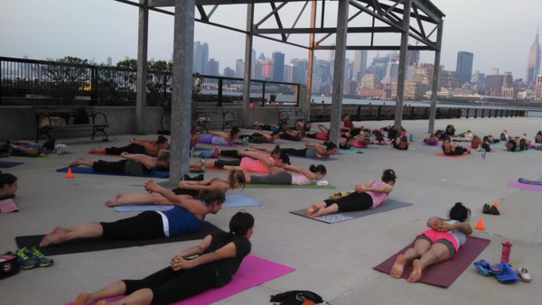
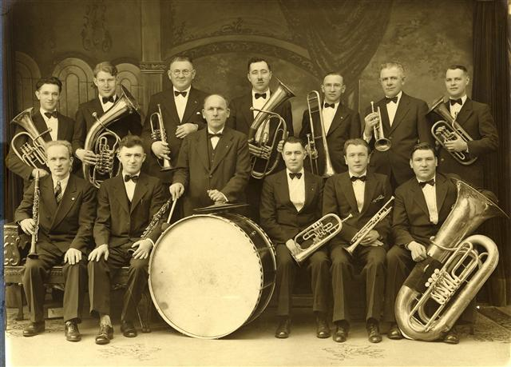
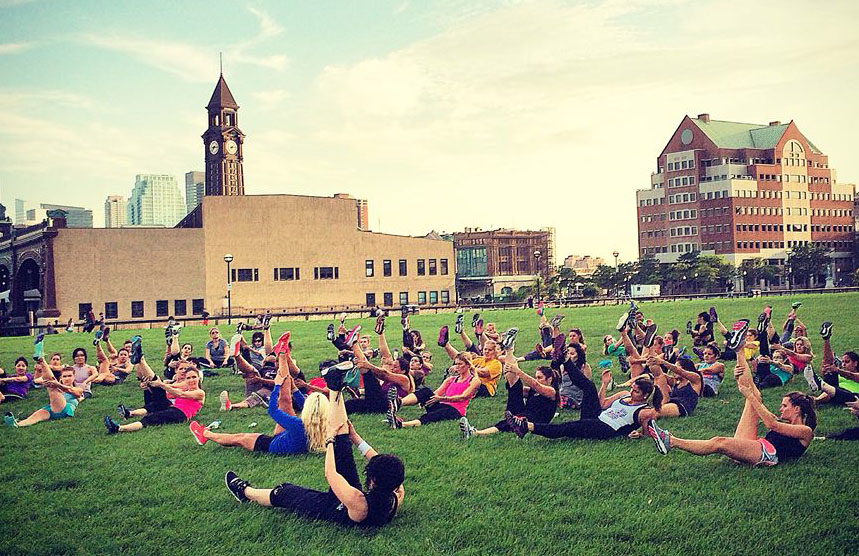
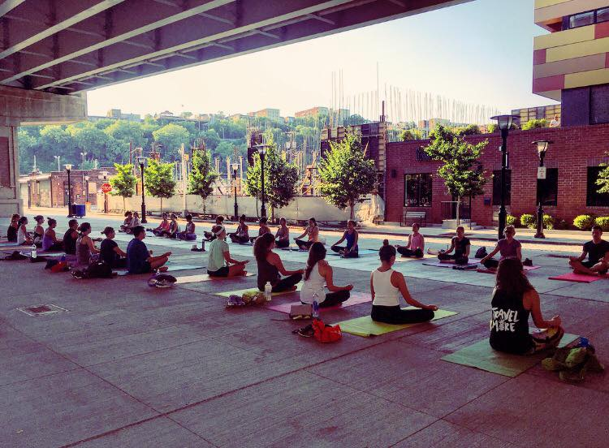
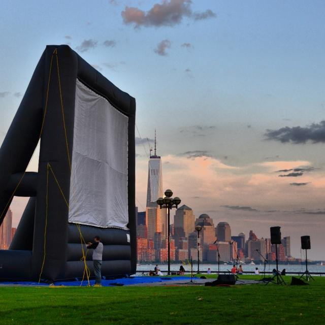
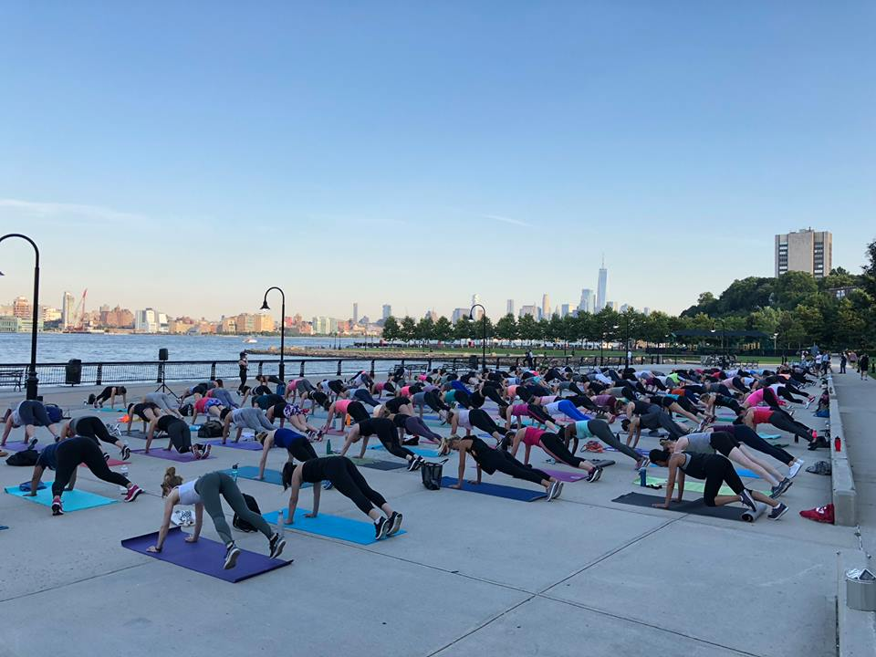
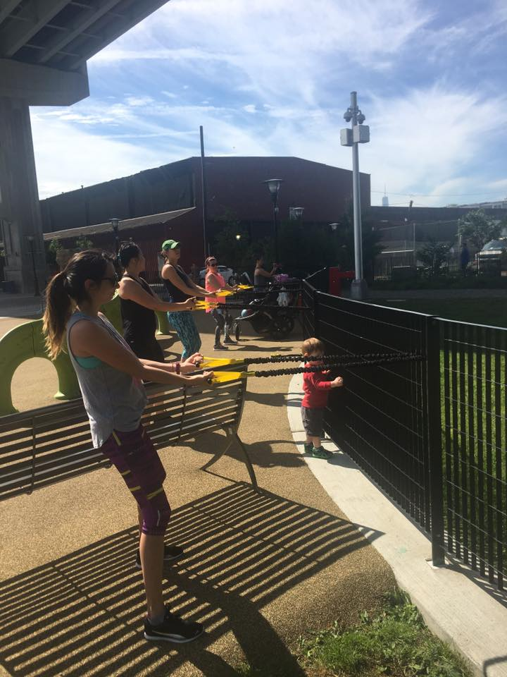
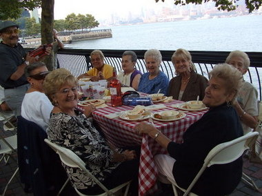
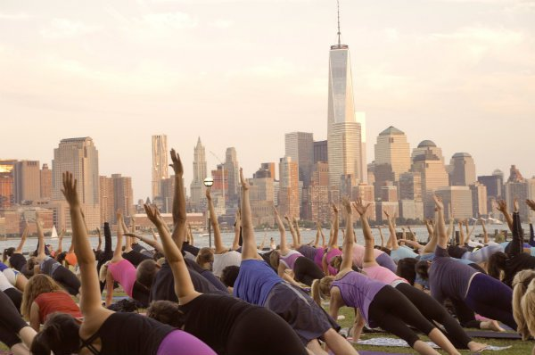

Events
credit to: Official Hoboken website
-

YOGA & PILATES AT MAXWELL PLACE PARK: FLEXIBLE RHYTHM YOGA
- Date: August 15th
- Time: 7:00pm to 8:00pm
- Location: Maxwell Place Park, 11TH Sinatra Dr N, Hoboken, NJ 07030
- Description: Flexible Rhythm Yoga will assist in enhancing the relationship between one's mind, body, and spirit. Through this event simple techniques to help posture and relieve minor physical discomforts, will be taught. All levels of yogis are allowed to participate.
- Additional Information: In the case of rain, class will be cancelled. Contact: Kelly Naughton — 732-547-3040; kellyn@flexiblerhythm.com.
-

CONCERT IN SINATRA PARK: THE SWINGADELIC BIG BAND
- Date: August 16th
- Time: 7:00pm to 9:00pm
- Location: Sinatra Park amphitheatre, 525 Sinatra Drive, Hoboken, NJ
- Description: Swingadelic is a jazz band. The group has performed in many prestigious venues and festivals. Examples include the NJPAC and JazzFest (Madison, NJ).
-

FITNESS AT PIER A PARK: PAVANA YOGA
- Date: August 20th
- Time: 7:00pm to 8:00pm
- Location: Pier A Park, 100 Sinatra Dr, Hoboken, NJ 07030
- Description: "Pavana Yoga: Pavana Pure Flow. Open level vinyasa flow." - hobokennj.gov
- Additional Information: In case of rain, the class will be cancelled. 973-641-9071; Info@pavanayogastudios.com
-

FITNESS UNDER THE 14TH ST VIADUCT: FLEXIBLE RHYTHM YOGA
- Date: August 20th
- Time: 6:30 pm to 7:30pm
- Location: 14th Street Viaduct, Hoboken, NJ 07030 (between Adams and Grand St.)
- Description: A yoga class sponsored by Flexible Rhythm Yoga
- Additional Information: Wear sneakers and loose fitting clothing. Bring your own mat and water. In case of rain or cold weather classes can still take place. The classes will take place under the space of the Viaduct, that is covered.
-

MOVIES UNDER THE STARS: THE GREATEST SHOWMAN
- Date: August 22th
- Time: 8:00pm to 10:00pm
- Location: Pier A Park, 100 Sinatra Dr, Hoboken, NJ 07030
- Description: Come to watch "The Greatest Showman," a movie that was nominated for 1 Oscar and 3 Gloden Globes. It's a free outdoor event!
- Additional Information: To get good seats, please come early and bring your own blankets or chairs. You may bring a picnic or food, but alcohol is not permitted and will cause you to be fined.
- "Assisted listening devices will be available upon request. Must call 201-420-2000 ex. 5100 with 3 weeks notice." -hobokennj.gov
-

YOGA & PILATES AT MAXWELL PLACE PARK: HUDSON YOGA PROJECT
- Date: August 23rd
- Time: 7:00pm to 8:00pm
- Location: Maxwell Place Park, 11TH Sinatra Dr N, Hoboken, NJ 07030
- Description: A dynamic & intelligently sequenced Vinyasa yoga class. All levels of yogis are welcomed
- Additional Information: In case of rain, the class will be cancelled. 201-580-1508; patrick@hudsonyogaproject.com
-

FITNESS UNDER THE 14TH ST VIADUCT: CLUB PILATES
- Date: August 29th
- Time: 6:30pm to 7:30pm
- Location: 14th St Viaduct, Hoboken, NJ 07030 (Under the 14th Street Viaduct between Adams and Grand St.)
- Description: A yoga class sponsored by Club Pilates
- Additional Information: (201) 839-6648 Wear sneakers and loose fitting clothing. Bring your own mat and water. In case of rain or cold weather classes can still take place. The classes will take place under the space of the Viaduct, that is covered.
-

SPAGHETTI DINNER BLOCK PARTY
- Date: August 30th
- Time: 5:00pm to 8:00pm
- Location: Walkway along Sinatra Drive between 1st & 2nd Streets
- Description: "The Spaghetti Dinner Block Party was an event that was started in 2005 to celebrate Hoboken’s 150th Anniversary. The idea was to recreate a community event that took place in 1955 for the City’s 100th Anniversary – a Spaghetti Dinner Block Party on Washington St. It has been so popular we have continued this tradition, but now the event takes place along the Hoboken waterfront, overlooking the Manhattan Skyline." -hobokennj.gov
- Tickets are:
- $25 for adults
- $10 for children 12 & under
- $15 for seniors
- $250 To reserve a table (seats 10 people)
- SEATING IS LIMITED, so buy tickets early.
- Tickets must be purchased in advance.
- They can be purchased online through our Comunitypass website: Go to www.hobokennj.gov/register and create an account or tickets can be purchased at City Hall, 94 Washington St., on the 3rd floor from the Cultural Affairs Office.
- NO TICKETS WILL BE SOLD AT THE DOOR, night of the event.
- Additional Information: Dinner includes - 4 kinds of pasta, meatballs, sausage, eggplant parmigiana, salad, bread & Italian desserts Wine, beer, water, soda, will also be available at additional cost and sold to raise funds for the Hoboken Ambulance Corp. (Outside alcohol not permitted. Coolers will be checked at the entrance.)
- For more information, call 201-420-2000 Ex. 5100 or gfallo@hobokennj.gov.
-

YOGA & PILATES AT MAXWELL PLACE PARK: SURYA YOGA
- Date: August 30th
- Time: 7:00pm to 8:00pm
- Location: Maxwell Place Park, 11TH Sinatra Dr N, Hoboken, NJ 07030
- Description: The class is an uplifting & fun Vinyasa yoga class. All levels of yogis are welcomed.
- Additional Information: In case of rain, the class will be cancelled. 201-798-7498, hoboken@SuryaYogaAcademy.com
-
FALL ARTS & MUSIC FESTIVAL
- Date: September 30th
- Time: 11:00am to 6:00pm
- Location: Washington St. between Observer Hwy. & 7th St.
- Description: It's the 25th year this event has been celebrated! Admission is FREE!!! The event will continue regardless of the weather being rain or shine.
- Over 300 artists, crafters, photographers, food vendors, local businesses and more.
- Activities for children on 3rd St. including rides, games, crafts, face painting, performance & more.
- 3 Stages of Live Music, featuring performances by:
- TheSmithereens with guest vocalist MarshalCrenshaw
- Joe Grushecky & the House Rockers
- The Rock n' Roll High Fives
- The Sensational Country Blues Wonders
- Maxima Alerta
- Sylvana Joyce + the Moment
- ZydecoRevelators
- Kid Notes with Chrissy Roberts & Ralph Capasso
- Songs for Seeds
- Garden St. School of the Performing Arts
- Michael from Michael & the Rockness Monsters and more
- special features include:
- Fine artists: Oil paintings, watercolors, acrylics, sculpture, mixed media, photography, etc.
- Children’s activities: face painting, sand art, balloons, and more.
- Crafters display / sell handmade: pottery, metalwork, wood items, furniture, blown & fused glass, quilts, household items made from recycled materials, batik clothing, hand painted furniture, candles, jewelry, dried florals, soaps & lotions and other unique handcrafted items.
- Food: Lots of great food throughout the fair. Hoboken restaurants will set up street cafes offering an eclectic variety of international foods such as: Thai, Indian, Greek, French, Mexican, Cajun and Italian
- Additional Information: gfallo@hobokennj.gov or 201-420-5100 ex.5100
- Volunteers are needed for morning setup on day of the event. Email Geri if interested: gfallo@hobokennj.gov